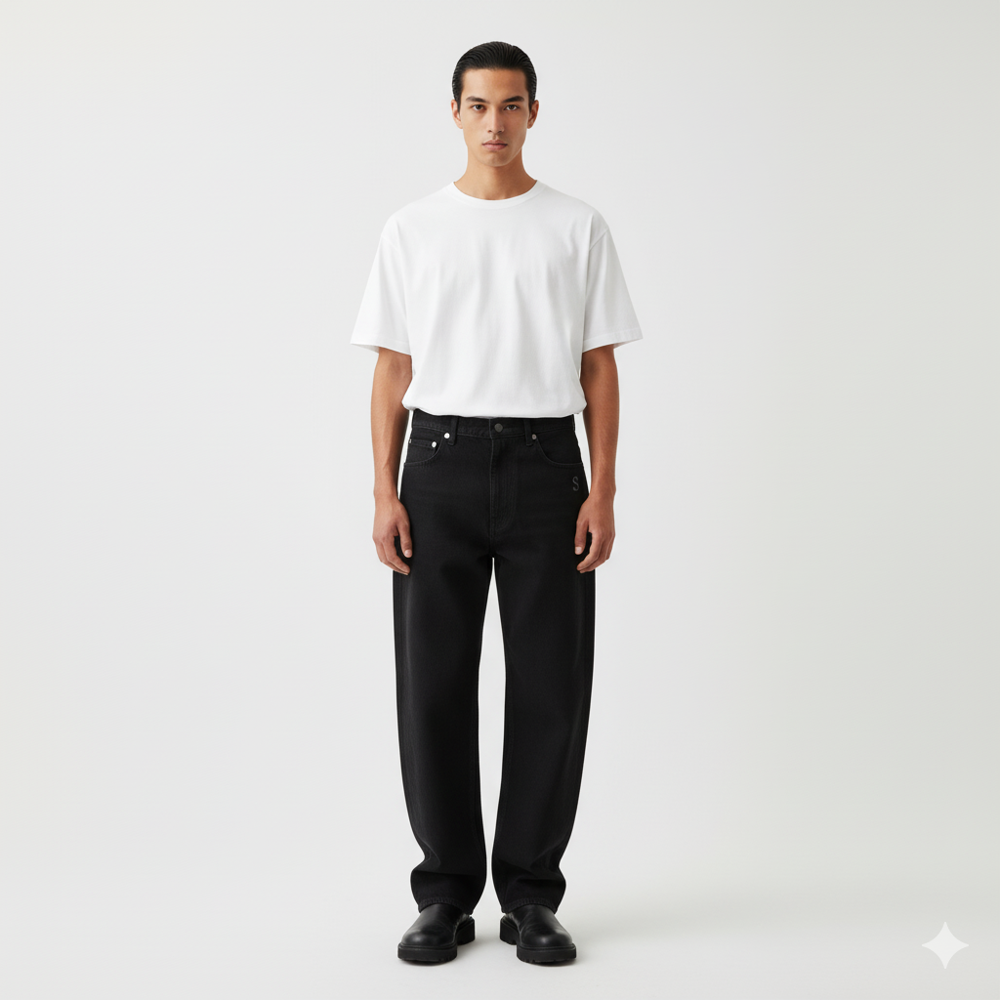

$550 MXN
Corte oversized, 100% algodón orgánico, textura gruesa. Bordado discreto de la letra "S" en el pecho.
Colores: Blanco, Negro, Gris claro
Tallas: S, M, L, XL
Peso de tela: 260 g/m²
0.75 m² • 260 g/m²
Telas Texterra
50 g poliéster
Proveedor local QRO
Letra "S" tono sobre tono
Bordados MX
Talla y composición
Proveedor local QRO
Desglose completo de costos de producción
| Algodón orgánico (260 g/m²) | $180 |
| Hilo poliéster reciclado | $10 |
| Etiqueta bordada "SOMA" | $8 |
| Etiqueta cuidado/talla | $2 |
| Subtotal Materiales | $200 |
| Mano de obra (corte) | $24 |
| Mano de obra (confección) | $120 |
| Mano de obra (QC + empaque) | $16 |
| Subtotal Mano de Obra | $160 |
| Costo Total de Producción | $360 |
| Precio de Venta | $550 |
| Margen Bruto | $190 (52.7%) |
Taller San José
Querétaro, México
3 semanas
(Corte, confección, QC)
3 personas
Salario justo certificado
100% inspección
< 3% tasa de defectos
Con los cuidados adecuados, esta prenda durará más de 5 años.
Esta es una marca conceptual creada para el curso de Cadena de Suministros
Universidad Autónoma de Querétaro - Ingeniería en Software - 2025